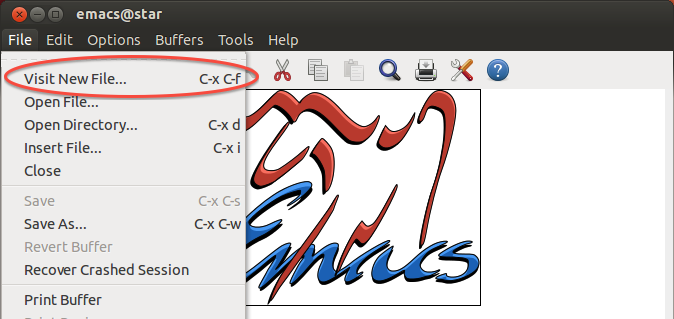

Emacs
Meet Emacs!
Emacs is an open source text editor that has been described as "timeless and
infinitely powerful." Even though Emacs was created in 1976 (!), it's still one
of the most popular text editors around, mainly because of how easy it is to
customize! You can make your Emacs look and behave exactly as you want it
to. Between its popularity and extensibility, if you see a cool feature in
another text editor that you want to steal emulate, someone in the Emacs
community has probably already done the dirty work for you.
Getting started is pretty easy in Emacs, although becoming a pro will take a bit
more work. Today, we'll just be introducing you to the basics. By the end of
this guide, you'll be able to open Emacs, create a new file called greet.py,
write a function greet, and run it from your terminal.
Getting Emacs on your own computer
- Windows: Scroll to the bottom of the Emacs website and download the file called "emacs-24.3-bin-i386.zip". Unzip the file, and you should be able to run it right away.
- MacOS: Good news! Emacs comes built-in — just type
emacsinto your terminal. It's pretty plain, so some people have created a nicer version here. Click the huge download button and follow the directions that pop up. After this, you should have Emacs in your Applications folder. If you're having trouble, there's a more detailed walkthrough on YouTube here. - Ubuntu: The easiest way to install Emacs on Ubuntu is to type
sudo apt-get install emacsinto your terminal.
Example: greet.py
Let's first create and navigate to a directory called example, using
the UNIX commands you learned in Lab 0:
mkdir ~/example
cd ~/exampleLet's try opening Emacs from the command line.
emacs &You need to add an ampersand (&) after emacs, so that your terminal will
still be responsive (as an exercise, try omitting the & and press Ctrl-c to
regain control of your terminal). A window like this should open up:

Opening files
To create a new file, you have two options.
Option 1: use the keyboard shortcut
C-x C-f. That is:- While holding down
Control(Ctrl), hit thexkey. - Release the
xkey. - While still holding
Control, hit thefkey.
A prompt will appear in the bottom area. This region is called the minibuffer. Type in
greet.pyand hit enter.- While holding down
Option 2: go to the
Filemenu and click onVisit New File...
Type
greet.pyinto the minibuffer and hit enter.
The Emacs window should turn into a blank page — you're looking at the newly
created greet.py file! In the future, whenever you want to open Emacs to edit a
file, you can type emacs greet.py & into your terminal. If the file that you
want to edit doesn't exist yet, Emacs will create it for you. If you already
have Emacs open, you can just use the same C-x C-f shortcut.
Editing files
Now, let's write a simple program that greets you by name. Don't worry if you don't understand the program yet! We'll learn what each of these pieces mean in more depth in the next few weeks.
def greet(name):
print('Hey', name, ', how are you doing today?')
print(' - Python')Emacs should now look something like this:

You'll notice that certain words are colored differently, like def and
print. Emacs looks at the .py at the end of the file name and knows that you
want to write Python, so it will highlight special words for you. Syntax
highlighting makes programs much easier to read!
Saving files
To save your program, use the keyboard shortcut C-x C-s or navigate to the
File menu and hit Save. You'll know it worked if Emacs tells you "Wrote
/some/directories/greet.py" in the minibuffer.
Now exit Emacs, either using the shortcut C-x C-c or finding File -> Quit
on the menu.
Running Python
Let's actually make Python do some work! Make sure that you're in the example
directory, which contains our greet.py file. Then, type this into your
terminal.
python3 -i greet.pyThis command does the following:
python3is the command that starts Python- The
-iis a flag that tells Python to start in interactive mode, which allows you to type in Python commands from your terminal greet.pyis the name of the Python file we want to load
The three right angle brackets (>>>) mean that you're inside the Python
interpreter. Now, you can get Python to greet you:
greet('Brian')Python will then print out
Hey Brian, how are you doing today?
- PythonOf course, you probably want Python to greet you and not me. So if your name is John, you should also type:
greet('John')and suddenly, Python knows how to greet you!
Hey John, how are you doing today?
- PythonCongratulations, you've edited your first file! This process of editing a file
and running it will feel more natural as the course progresses. To exit the
Python interpreter, you can type in exit() or quit() into the interpreter or
hit C-d.
Everything you've learned so far is enough to get you through 61A. To get the most out of using Emacs, though, you should become more proficient with Emacs' keyboard shortcuts.
Keyboard Shortcuts in Emacs
If you ever get the chance to watch a pro use Emacs, you'll notice that she never uses the mouse — everything she does is via shortcuts. Emacs has a wide variety of shortcuts that will help you do pretty much anything.
You might remember from above that C-x means: while holding Control, press
the x key. Similarly, C-s means: while holding Control, press
s. Together, the shortcut C-x C-s means to do C-x, then C-s.
The Meta Key
Some shortcuts involve the Meta key, like the shortcut to copy the highlighted
region of text: M-w. Most keyboards these days don't have an actual Meta
key, so we use the Alt key instead. (If you're on a Mac, use Cmd.) To
execute the copy command, hold Alt and press w.
M-x
One of the most common Meta key shortcuts is M-x. If you hit M-x, the
minibuffer will prompt you for the name of a command. Try M-x doctor or M-x
snake!
Useful Shortcuts
As you've probably noticed, the shortcuts for Emacs are quite different from the
ones that you're used to. You'll find that Emacs shortcuts are actually pretty
common in the programming world. For example, try typing python3 -i greet.py
into your terminal, without hitting enter. What does M-b do? It does the same
thing as it does in Emacs, which is go backward by a word! Try M-f too.
If you'd like to enable things like C-c and C-v for copy and paste, you can
turn on CUA keys by finding it in the Options menu. I'd recommend trying the
Emacs way, though!
| Shortcut | Description |
|---|---|
C-x C-s |
Save your file |
C-x C-f |
Open a file (or create a new file) |
C-/ |
Undo |
C-w |
Cut the highlighted region of text |
C-y |
Paste text |
M-w |
Copy the highlighted region of text |
C-g |
Cancel a command |
C-x C-c |
Exit emacs |
Emacs Help
Emacs has a ton of informative "help" commands. You can get more information about any command or keyboard shortcut. The best part is that Emacs is self-documenting — there's no need to open up something else to get help, since it'll show up right inside Emacs!
C-h twill start up the Emacs tutorial. Going through this is highly recommended, as it will help you become more proficient with the various movement keyboard shortcuts. It's a bit long though, so you might not be able to finish it in one sitting.C-h fwill prompt you for the name of a function and return its docstring.C-h kwill prompt you for a keyboard shortcut and return its doctsring.
Not Convinced?
Emacs...will be there when the icecaps melt and the cities drown, when humanity destroys itself in fire and zombies, when the roaches finally achieve sentience, take over, and begin using computers themselves - at which point its various Ctrl-Meta key-chords will seem not merely satisfyingly ergonomic for the typical arthropod, but also direct evidence for the universe's Intelligent Design by some six-legged, multi-jointed God. — Kieran Healy
Your very own Emacs legend is about to unfold! A world of dreams and adventures with Emacs awaits! Let's go! — Samuel Oak
Appendix B: Additional Emacs Resources
C-h t: it's good for you!- a more visual guide to emacs here: feel free to skip step 0; step 4 (buffer & window management) is one of Emacs' best features
- a more visual guide to learning shortcuts here, from the same source as above
- a comprehensive advanced beginner's guide here: goes over a lot of Emacs terminology, which is good but might be overwhelming.
- your favorite search engine has the answers to almost any Emacs question you have!
{kind=link}
{kind=link}